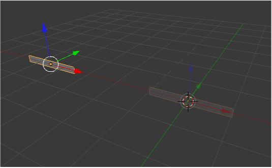
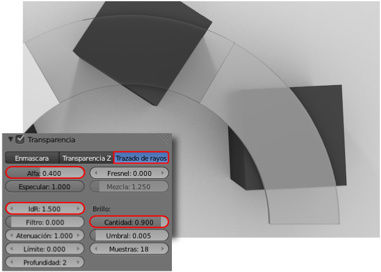

Material didáctico: Propiedades ópticas
Vamos a crear una bonita semi-rueda con las tres propiedades ópticas: opaco, transparente y translúcido.
Este es el método para obtener la parte geométrica:
- Eliminamos el cubo por defecto y nos aseguramos de que el Cursor 3D esté en 0.0.0.
- Sacamos a escena un plano (Añadir/Malla/Cubo), lo rotamos 90º en X ("RX90") y lo escalamos en Z ("SZ").
- Desde Modo Objeto
 desplazamos en el eje X (rojo).
desplazamos en el eje X (rojo).

- Nos colocamos en el punto de vista superior ("NumPad_7") y activamos Girar en el cuadro Herramientas ("T"); acto seguido nos vamos a sus opciones para editar: Paso: 20 y Grados: 60.

- En Modo Edición
 seleccionamos todo los vértices ("A") y les aplicamos otra vez Girar (con Pasos: 2 y Grados: 120). No se creará un objeto de revolución a ser una malla cerrada, sino duplicados radiales. Es importante que el Cursor 3D no se haya movido respecto a la anterior operación.
seleccionamos todo los vértices ("A") y les aplicamos otra vez Girar (con Pasos: 2 y Grados: 120). No se creará un objeto de revolución a ser una malla cerrada, sino duplicados radiales. Es importante que el Cursor 3D no se haya movido respecto a la anterior operación.
- Seleccionamos todos los vértices ("A") y hacemos independientes los tres módulos. Para ello pulsamos "P" y elegimos Por partes perdidas.
- Para una mejor organización seleccionamos en Modo Objeto los tres módulos y les aplicamos a la vez la Herramienta ("T") Origen/Origen a la geometría.
Antes de comenzar a asignar materiales completamos la parte geométrica. Sólo hay que sacar un plano (Añadir/Malla/Plano) para el suelo y entre los módulos y ese plano colocaremos unos cubos (Añadir/Malla/Cubo) sobre los que se apoyarán.
Comenzamos con los Materiales  .
.
A los cubos le hemos dado un color Difuso oscuro (4B4B4B) y les activamos, en la botonera Sombra, la opción Recibir transparencia. Ya tenemos la cámara en el punto de vista superior ("NumPad 7" y después "Control_Alt_NumPad 0") y este es nuestro primer render (tenemos Iluminación básica).
Al módulo de arriba le aplicamos una Transparencia con Trazado de rayos (Alfa: 0.050 y IdR: 1.5).
Al de la derecha le aplicamos también una Transparencia pero con estos parámetros:
- Trazado de rayos activado.
- Alfa: 0.400.
- IdR: 1.500.
- Cantidad: 0.900. Importante para que se desenfoque más la parte baja del cubo que la que está en contacto con el cristal.
Ya está todo preparado para obtener nuestro render final y elaborar una bonita presentación.